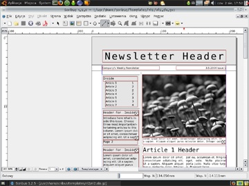

Scribus
Scribus is a well-known open-source DTP application. When considering its features it is often being compared to the most popular commercial software packages like Adobe PageMaker, QuarkXPress and Adobe InDesign.
Program’s main goal is to provide flexible layout and typesetting together with ability to prepare files for professional quality image setting equipment. Some of its features include:
- CMYK and spot color including ICC color managed previews of images and embedding ICC profiles in PDF documents for accurate screen to print color.
- Creation of CMYK and RGB color PostScript separations.
- Sophisticated PDF creation, including interactive PDF forms, support for nearly all PDF field types, and JavaScript actions.
- Full support for Level 2 PostScript output, a very large subset of Level 3 and support for PDF 1.4 features including transparency, gradients and 128 bit security.
- Full Compliance with PDF/X-3, an ISO standard for creating "press ready" PDFs - a first for any page layout application.
- Font embedding and sub-setting in both postscript and PDF export.
- Easy to use drawing tools for custom shapes including: freehand lines, lines, curves, ellipses, bezier curves, polygons, etc.
- Full support for both TrueType, Type 1 PostScript and OpenType fonts.
Text can be imported from OpenDocument, RTF, Microsoft Word .doc and HTML documents. Scribus file format is XML-based and fully documented.
Scribus is available for wide range of operating systems: Linux/Unix, Windows, Mac OS X, OS/2 and has been translated to 27 different languages. Publicly known usage of the program covers writing magazines, brochures, newsletters, posters and books. Application is also well known for its very helpful user community.
See also: